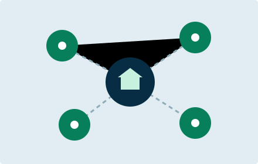

Leituras abertas
Conheça recursos externos que podem ampliar seus estudos.
CONHECIMENTO QUE ACOMPANHA VOCÊ
Um espaço para ler, pesquisar e ir além. Encontre materiais para os seus estudos e caminhos para novas ideias.
Leituras abertas e apoio à vida acadêmica
SOBRE A NOSSA BIBLIOTECA
A biblioteca conecta a comunidade acadêmica a fontes de estudo, pesquisa e leitura. Nesta interface, os materiais estão organizados para facilitar a descoberta de conteúdos.
Comece pelos destaques e escolha a área que combina com o seu momento de aprendizagem.
Para consultar o acervo institucional e as orientações de acesso, visite a página oficial da biblioteca. As bibliotecas virtuais da instituição são acessadas pela plataforma One.
Ver orientações de acessoConheça recursos externos que podem ampliar seus estudos.
Explore literatura, tecnologia, ciências e gestão.
Encontre os caminhos para as fontes e serviços oficiais.
Saiba onde buscar orientação para continuar sua leitura.
NOSSOS LIVROS
Seleção demonstrativa de materiais abertos externos. O acervo institucional está no portal oficial da biblioteca.
AS UNIDADES
Conheça os caminhos de apoio presencial e digital da instituição.
01 / CAMPUS
O campus-sede fica na Av. Vida Nova, 166, Jardim Maria Rosa, em Taboão da Serra, São Paulo. Consulte os canais oficiais para informações sobre atendimento e serviços presenciais.
Conheça o campus
02 / POLOS DE APOIO
Os polos conectam estudantes aos serviços de apoio da instituição. Use a página oficial para localizar o polo da sua região e consultar suas informações.
Encontre um polo03 / AMBIENTE DIGITAL
O ambiente digital complementa os espaços presenciais. A página oficial explica o acesso às bibliotecas virtuais e os procedimentos de consulta e renovação.
Acesse as orientaçõesCONTATOS
Para dúvidas sobre acesso e serviços, procure a equipe da biblioteca ou os canais institucionais.
EQUIPE DA BIBLIOTECA
atendimento.biblioteca@fecaf.com.brCONTATO INSTITUCIONAL
(11) 4210-4950Av. Vida Nova, 166 · Jardim Maria Rosa
Taboão da Serra · SP · CEP 06764-045